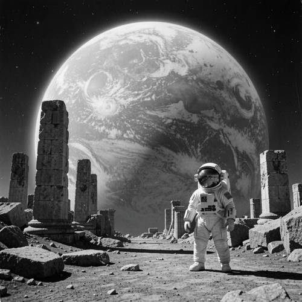
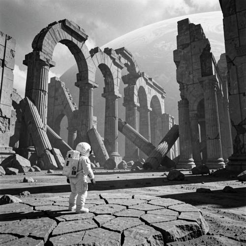
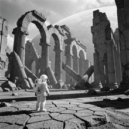
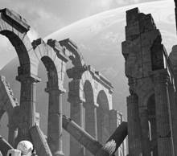

Style — Please generate a documentary black and white photo of a tiny astronau
Please generate a documentary black and white photo of a tiny astronaut standing next to the ancient ruins of a giant planet.

Direct — one call, no iteration

Continuum — Qwen3.8-27B + FLUX.2-klein-9B
Judge — Direct
PASSStyle — The image is presented in black and white. It has the quality of a photograph, with defined textures, lighting, shadows, and a slight film grain effect, which is consistent with the 'documentary black and white photo' style.
FAILAttribute - Size — The image features a very large planet in the sky, which fulfills the 'giant planet' requirement. However, the astronaut in the foreground is depicted as a prominent, human-sized figure relative to the immediate ruined structures. The astronaut is not portrayed as 'tiny' within the overall composition, as it takes up a significant amount of space in the foreground.
Judge — Continuum
PASSStyle — The image is presented in black and white, with a grainy texture and high contrast, which emulates the style of documentary photography.
PASSAttribute - Size — The image features an astronaut who appears small in scale compared to the massive, towering ancient ruins that surround them. In the sky behind the ruins, a large celestial body, which can be identified as a giant planet, is prominently visible.
What the agent did
Thinking
Let's start by generating an image from the user's description.
Step 1 — `generate_image`
{
"prompt": "Documentary black and white photograph, tiny astronaut in a bulky white space suit standing on cracked barren rock in the foreground, dwarfed by colossal ancient ruins of a giant planet in the background \u2014 massive broken stone arches, fallen columns and weathered mega-structure walls as big as mountains, dramatic scale contrast, grainy 35mm film texture, high-contrast monochrome, harsh side lighting, deep shadows, overcast sky, National Geographic style fine-art documentary photography",
"model": "flux2-klein",
"width": 1024,
"height": 1024
}
Result img_0

Thinking
The image is very good. Let me check against the prompt: 1. Documentary-style black-and-white photo ✓ — monochrome, grainy film texture, documentary composition 2. Small astronaut ✓ — astronaut in the foreground, dwarfed by the ruins 3. Ancient ruins of a giant planet ✓ — massive arches and columns... The interpretation of "giant planet" could mean a giant planet floating in the sky, or that the ruins themselves belong to a giant planet. In the image there's a large celestial body in the upper right, which could be read as the giant planet, plus massive ruin structures that dwarf the astronaut. This works well. Let me zoom in to check details and artifacts, especially the astronaut (hands, face) and the texture. Let me check the astronaut area.
Model
The first generation looks promising. Let me inspect the key areas up close before deciding.
{
"image": "img_0",
"roi": "the giant planet in the sky"
}
Result img_2

Thinking
Inspection results: - Astronaut: Looks good. The suit is convincing, the backpack is detailed, and the hands look fine too (visible gloved hands on both sides, no obvious extra fingers in this crop — the left glove looks a bit dark and small but it's acceptable for a documentary-style shot from behind). The helmet is a dark visor. No issues. - Giant planet: A large celestial body with a subtle ring / cloud texture is visible in the upper right, and it's clearly a giant planet (Jupiter-like cloud bands can be faintly seen). The image satisfies all the requirements of the prompt: 1. Documentary-style black-and-white photo ✓ (monochrome, film grain, documentary composition) 2. Small astronaut ✓ (placed in the lower center of the foreground, dwarfed by the scale) 3. Ancient ruins of a giant planet ✓ (huge broken arches and columns + a giant planet looming in the sky) The scale contrast is excellent. The composition is strong. This is a good image. I think this is in a state where it can be submitted. Let me mark it as the best. One more point to consider: the astronaut is seen from behind — a documentary-style shot, so no problem. The ruins are clearly "ancient" (weathered stone, broken columns). "Giant planet" — the planet in the sky reads as a giant planet, and the ruins could be interpreted as remnants of that planet / a megastructure. Good. Mark img_0 as the best and stop. Good enough — no more edits needed.
Model
Both inspections are fine: the astronaut's suit, backpack, and gloved hands hold up under close-up inspection, and the sky clearly shows the curved silhouette of a giant planet with faint cloud bands looming above the arch. The image satisfies every element of the prompt: - **Documentary black-and-white photo**: monochrome with a fine film grain, high-contrast lighting, and a National Geographic-style documentary composition - **Small astronaut**: a lone suited figure in the foreground, dwarfed by the surroundings - **Ancient ruins of a giant planet**: giant weathered stone arches, columns, and fallen lintels towering like mountains, with a giant planet dominating the sky This is a solid result, so I'll mark it as the best and be done.
Step 4 — `mark_best`
{
"image": "img_0",
"reason": "Meets all prompt elements: documentary black-and-white look, tiny astronaut dwarfed by colossal ancient ruin arches and columns, with a giant planet looming in the sky. Details verified via close-up inspection."
}
Thinking
I need to look into this further. Let me check the details. The run is complete. The best image (img_0) has been marked. Let me summarize.
Model
Done. The final image is a documentary black-and-white photograph of a lone astronaut in a bulky suit standing on cracked, barren stone, dwarfed by the colossal ancient ruins — broken arches, leaning columns, and shattered mega-structure walls — while a giant planet hangs low in the overcast sky. The grainy monochrome treatment, harsh side lighting, and deep shadows give it an authentic fine-art documentary feel, and the scale contrast is the heart of the shot. The best version is marked and ready to return.